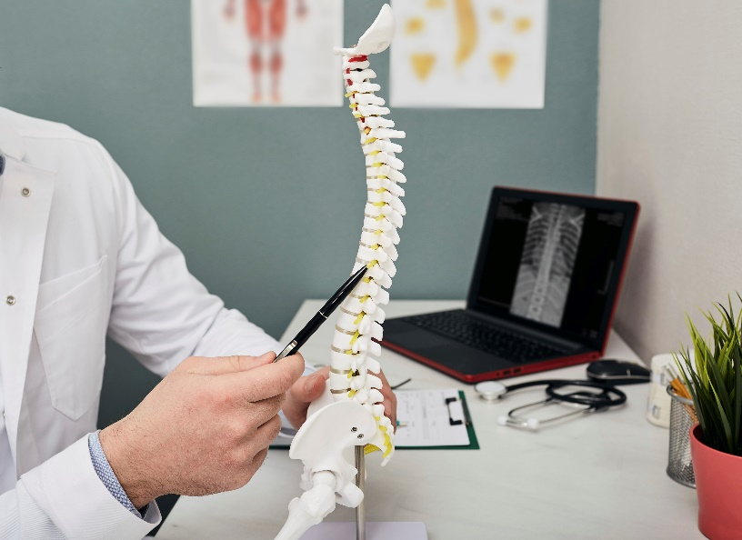

수술 전,비수술 치료를 먼저 고려합니다
목·허리 디스크, 척추관협착증, 퇴행성 관절염, 오십견 등
척추와 관절 통증의 원인을 정확하게 진단하고
환자의 상태에 맞는 비수술 치료를 우선적으로 시행합니다.
- 목·허리
디스크 - 척추관
협착증 - 퇴행성
관절염 - 무릎·고관절
통증

“처음 만나는 정형외과,
올바른 치료의 기준이 되겠습니다.”
안녕하십니까.
처음본정형외과 대표원장 이형기입니다.
갑작스러운 외상이나 만성 질환으로 인한 통증은 누구에게나 찾아올 수 있지만,
치료의 선택은 달라야 합니다.
진료 현장에서 불필요한 수술로 오히려 더 큰 고통을 겪거나,
적절한 치료 시기를 놓쳐 상태가 악화된 환자분들을 자주 만났습니다.
저는 10여년간 수천 례 이상의 척추·관절 수술을 직접 집도한 정형외과 전문의로서,
수많은 임상 경험을 통해 얻은 해부학적 이해를 바탕으로
환자분께 가장 필요한 치료의 우선순위를 정확하게 제시하겠습니다.
처음본정형외과는 눈앞의 통증 완화를 넘어 ‘근본 원인 치료’를 지향합니다.
불필요한 수술 가능성을
낮춥니다.
환자의 상태와 생활환경까지
체계적으로 고려합니다.
환자 중심의
의료 서비스를 제공합니다.
처음 만나는 올바른 치료의 경험, 처음 만나는 정형외과의 새로운 기준.
처음본정형외과가 여러분의 건강한 일상과 편안한 움직임을 위해 처음부터 끝까지 함께하겠습니다.

환자의 불편함을 먼저 생각하고, 치료의 모든 순간에 세심함을 더합니다.
처음본정형외과는 전문적인 진료와 편안한 환경으로 건강한 일상을 함께합니다.

내원하시는 분들의 편의를 위해
자주식 주차 가능 대수를 안내해 드리고 있습니다.

10년간 수천례 이상의 수술집도 경험을 바탕으로
정확한 비수술치료를 시행합니다.
편안하고 쾌적한 치료 환경에서
환자분들의 상태에 맞춘 세심한 물리치료를 제공합니다.
처음본정형외과는 눈앞의 통증 완화를 넘어 ‘근본 원인 치료’를 지향합니다.
처음 만나는 올바른 치료의 경험, 정형외과의 새로운 기준을 경험해 보세요.
목·허리 디스크, 척추관협착증, 퇴행성 관절염, 오십견 등
척추와 관절 통증의 원인을 정확하게 진단하고
환자의 상태에 맞는 비수술 치료를 우선적으로 시행합니다.
통증의 원인이 되는 부위를 정밀하게 확인한 후
신경 주변에 약물을 주입하여 통증과 염증을 완화합니다.
환자의 상태에 따라 치료 방법과 횟수를 결정합니다.

인대·힘줄·연골 등 손상된 조직의 회복을 돕기 위해
환자의 상태에 맞는 재생치료를 시행합니다.
반복되는 손상과 만성 통증 관리에 활용합니다.

넘어짐, 교통사고, 스포츠 활동 등으로 인한 외상과 골절을
정형외과 전문의가 정확하게 진단하고 처치합니다.
수술이 필요한 경우 적절한 치료 시기를 놓치지 않도록 안내합니다.

도수치료와 체계적인 재활운동으로 통증 완화와 기능 회복을 돕고
재발 방지를 위한 바른 자세와 운동 방법을 안내합니다.
쾌적하고 편안한 물리치료실에서 치료가 진행됩니다.

처음본정형외과는 대학병원 수준의 검사 및 치료장비와 방사선 저감장비를 갖추고 있습니다.
정형외과 전문의가 검사 결과를 바탕으로 환자의 상태를 정확하게 판단하고 가장 필요한 치료를 안내합니다.
장비 설명이 들어갈 자리입니다. 병원 보유장비 확인 후 사진과 내용을 추가합니다.
장비 설명이 들어갈 자리입니다. 병원 보유장비 확인 후 사진과 내용을 추가합니다.
장비 설명이 들어갈 자리입니다. 병원 보유장비 확인 후 사진과 내용을 추가합니다.
장비 설명이 들어갈 자리입니다. 병원 보유장비 확인 후 사진과 내용을 추가합니다.
장비 설명이 들어갈 자리입니다. 병원 보유장비 확인 후 사진과 내용을 추가합니다.
장비 설명이 들어갈 자리입니다. 병원 보유장비 확인 후 사진과 내용을 추가합니다.
넓은 대기실과 쾌적한 물리치료실, 프라이빗한 진료 공간까지
처음본정형외과는 환자분의 편안한 치료를 위해 최선을 다하겠습니다.
경기도 안양시 만안구 석수동 319-3, 301호
처음본정형외과의원